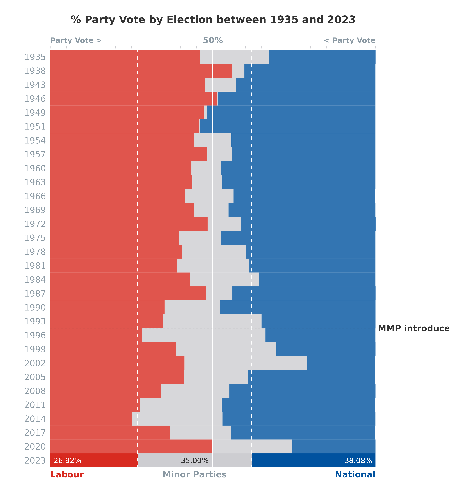

This article explores the summary
and preMMP_results
datasets.
Summary
The summary
dataset consolidates key electoral information, providing a bird’s-eye
view of New Zealand’s elections. It can be used to find the number of
seats, votes (n & %), and nominations/on party list by ballot type -
Candidate Vote, Party Vote, or Total (Seats column = Candidate + Party;
Vote column = Party only). It can also be used to find the number of
overhang seats and which party these can be attributed to.
Loading the Data
Begin by loading the summary
dataset to understand the structure:
# Load datasets by using the following helper function:
df <- scgUtils::get_data("summary")
# Alternatively, use: data("summary"), then df <- summary
# View the data
head(df)| Election | Party | Ballot | Seats | Votes | Percentage | Nominated | Registered | Successful |
|---|---|---|---|---|---|---|---|---|
| 2023 | ACT Party | Candidate | 2 | 149507 | 5.45 | 59 | Yes | Yes |
| 2023 | Animal Justice Party | Candidate | 0 | 5829 | 0.21 | 17 | Yes | No |
| 2023 | Aotearoa Legalise Cannabis Party | Candidate | 0 | 12566 | 0.46 | 14 | Yes | No |
| 2023 | DemocracyNZ | Candidate | 0 | 12060 | 0.44 | 13 | Yes | No |
| 2023 | Freedoms NZ | Candidate | 0 | 0 | 0.00 | 0 | Yes | No |
| 2023 | NZ Outdoors & Freedom Party | Candidate | 0 | 3030 | 0.11 | 3 | Yes | No |
Party and Candidate Votes
To view the top performing parties, rank the Party and Candidate Vote
by Party for the 2023 election by removing the Total ballot
type from the dataset:
| Election | Party | Ballot | Seats | Votes | Percentage | Nominated | Registered | Successful |
|---|---|---|---|---|---|---|---|---|
| 2023 | National Party | Candidate | 43 | 1192251 | 43.47 | 67 | Yes | Yes |
| 2023 | National Party | Party | 5 | 1085851 | 38.08 | 74 | Yes | Yes |
| 2023 | Labour Party | Candidate | 17 | 855963 | 31.21 | 72 | Yes | Yes |
| 2023 | Labour Party | Party | 17 | 767540 | 26.92 | 76 | Yes | Yes |
| 2023 | Green Party | Party | 12 | 330907 | 11.61 | 49 | Yes | Yes |
| 2023 | ACT Party | Party | 9 | 246473 | 8.64 | 60 | Yes | Yes |
| 2023 | Green Party | Candidate | 3 | 226575 | 8.26 | 52 | Yes | Yes |
| 2023 | NZ First | Party | 8 | 173553 | 6.09 | 35 | Yes | Yes |
| 2023 | ACT Party | Candidate | 2 | 149507 | 5.45 | 59 | Yes | Yes |
| 2023 | Maori Party | Candidate | 6 | 106584 | 3.89 | 17 | Yes | Yes |
Overhang Seats
As a reminder, overhang seats occur when the Party Vote entitles that
party to fewer seats than the number of electorate seats that it won. To
view any overhang seats, remove the Candidate and
Party ballot types and unsuccessful parties from the
dataset. Then, calculate the overhang seats by multiplying the 120 total
parliamentary seats by the proportion of the party vote for successful
parties:
df %>%
filter(Successful == "Yes", Ballot == "Total", Election == 2023) %>%
group_by(Election) %>%
mutate(`Successful_%` = Votes / sum(Votes) * 100) %>%
ungroup() %>%
mutate(Overhang = Seats - round(120 * `Successful_%` / 100, 0)) %>%
arrange(-Overhang)| Election | Party | Ballot | Seats | Votes | Percentage | Nominated | Registered | Successful | Successful_% | Overhang |
|---|---|---|---|---|---|---|---|---|---|---|
| 2023 | Maori Party | Total | 6 | 87844 | 3.08 | 48 | Yes | Yes | 3.26 | 2 |
| 2023 | ACT Party | Total | 11 | 246473 | 8.64 | 119 | Yes | Yes | 9.16 | 0 |
| 2023 | Green Party | Total | 15 | 330907 | 11.61 | 101 | Yes | Yes | 12.29 | 0 |
| 2023 | Labour Party | Total | 34 | 767540 | 26.92 | 148 | Yes | Yes | 28.51 | 0 |
| 2023 | NZ First | Total | 8 | 173553 | 6.09 | 69 | Yes | Yes | 6.45 | 0 |
| 2023 | National Party | Total | 48 | 1085851 | 38.08 | 141 | Yes | Yes | 40.33 | 0 |
Create Plot
To view overhang seats over
time, visualise the number of seats won by party at each election:
df %>%
# remove parties which did not win a seat
filter(Successful == "Yes", Ballot == "Total") %>%
ggplot(aes(x = Election, y = Seats,
fill = factor(Party, levels = c("National Party", "ACT Party", "NZ First",
"United Future", "Jim Anderton's Progressive",
"MANA", "Maori Party", "Alliance", "Green Party",
"Labour Party")))) +
geom_bar(stat = "identity", colour = "white", linewidth = 0.15, alpha = 0.8) +
# indicate majority required for a 120 seat parliament
geom_hline(yintercept = 60, colour = "white", linewidth = 0.5) +
# indicate overhang seats
geom_hline(yintercept = 120, colour = scgUtils::colour_pal("French Grey")) +
annotate("text", x = 2025, y = 120, label = "Overhang",
colour = scgUtils::colour_pal("Regent Grey"),
size = 3.5, fontface = 2) +
coord_flip(clip = "off", xlim = c(1994.5, 2024.5)) +
labs(title = "No. of Seats by Election and Party (1996 - 2023)",
fill = "Party") +
scale_fill_manual(values = scgUtils::colour_pal("polNZ")) +
scale_y_continuous(expand = c(0, 0)) +
scale_x_continuous(expand = c(0, 0), "Election",
labels = as.character(df$Election), breaks = df$Election) +
scgUtils::theme_scg() +
theme(panel.grid.major.y = element_blank(),
panel.grid.minor.y = element_blank())
preMMP Results
The summary
dataset can be combined with the preMMP_results
dataset. The preMMP_results
dataset contains the overall results between 1890 and 1993 by party at
the national-level.
Loading the Data
View the shape of data frame.
| Election | Party | Seats | Percentage |
|---|---|---|---|
| 1890 | Liberal | 38 | 56.10 |
| 1890 | Conservative Party | 25 | 28.90 |
| 1890 | Independents | 11 | 15.00 |
| 1893 | Liberal | 51 | 57.80 |
| 1893 | Conservative Party | 13 | 24.49 |
| 1893 | Independents | 10 | 17.71 |
Merge datasets
To match the preMMP_results dataset, remove the
summary dataset Party and
Candidate ballot types.
df <- df %>%
filter(Ballot == "Total") %>%
mutate(Party = ifelse(Successful == "Yes", Party, "Other")) %>%
group_by(Election, Party) %>%
summarise(Seats = sum(Seats), Votes = sum(Votes), .groups = 'drop') %>%
ungroup() %>%
group_by(Election) %>%
mutate(Percentage = round(Votes / sum(Votes) * 100, 2)) %>%
ungroup() %>%
select(Election, Party, Seats, Percentage) %>%
arrange(-Election)
# Merge
df2 <- rbind(df, df1)
# view dataset
head(df2)| Election | Party | Seats | Percentage |
|---|---|---|---|
| 2023 | ACT Party | 11 | 8.64 |
| 2023 | Green Party | 15 | 11.61 |
| 2023 | Labour Party | 34 | 26.92 |
| 2023 | Maori Party | 6 | 3.08 |
| 2023 | NZ First | 8 | 6.09 |
| 2023 | National Party | 48 | 38.08 |
Visualise the Historic Party Vote
Visualise the party/popular vote at each election:
df2 <- df2 %>%
# filter 1935 until current time (since the beginning of the National and Labour parties)
filter(Election >= 1935) %>%
mutate(Party = ifelse(Party %in% c("National Party", "Labour Party"), Party,
ifelse(Party == "United-Reform ('National')", "National Party",
"Other")),
Party = factor(Party, levels = c("National Party", "Other", "Labour Party"))) %>%
group_by(Election, Party) %>%
summarise(Percentage = round(sum(Percentage), 2), .groups = 'drop') %>%
ungroup()
df2 %>%
ggplot(aes(x = reorder(Election, -Election), y = Percentage,
fill = Party)) +
geom_bar(stat = "identity", alpha = 0.8, width = 1, size = 0) +
geom_bar(data = df2 %>% filter(Election == 2023), aes(x = 1, y = Percentage, fill = Party),
stat = "identity", alpha = 1, width = 1) +
# Add 50% line
geom_hline(yintercept = 50, colour = "white") +
annotate("text", x = 31.2, y = 50, label = "50%", size = 3.5, fontface = 2,
colour = scgUtils::colour_pal("Regent Grey")) +
annotate("text", x = 31.2, y = 0, label = "Party Vote >", size = 3, fontface = 2,
colour = scgUtils::colour_pal("Regent Grey"), hjust = 0) +
annotate("text", x = 31.2, y = 100, label = "< Party Vote", size = 3, fontface = 2,
colour = scgUtils::colour_pal("Regent Grey"), hjust = 1) +
# Add dashed lines for 2023 result
geom_hline(yintercept = df2$Percentage[df2$Election == 2023 & df2$Party == "Labour Party"],
colour = "white", linewidth = 0.5, linetype = "dashed") +
geom_hline(yintercept = 100 - df2$Percentage[df2$Election == 2023 & df2$Party == "National Party"],
colour = "white", linewidth = 0.5, linetype = "dashed") +
# Add introduction of MMP line
geom_vline(xintercept = 10.5, colour = scgUtils::colour_pal("Black80"),
linetype = "dashed", linewidth = 0.25) +
annotate("text", x = 10.5, y = 100.75, label = "MMP introduced", size = 3.5, fontface = 2,
colour = scgUtils::colour_pal("Black80"), hjust = 0) +
# Add text to 2023 result
geom_text(x = 1, y = 1,
label = paste0(df2$Percentage[df2$Election == 2023 & df2$Party == "Labour Party"], "%"),
hjust = 0, size = 3, colour = "white") +
annotate("text", x = 0, y = 0, label = "Labour", size = 3.5, fontface = 2,
colour = "#D82A20", hjust = 0) +
geom_text(x = 1, y = df2$Percentage[df2$Election == 2023 & df2$Party == "Labour Party"] +
(df2$Percentage[df2$Election == 2023 & df2$Party == "Other"] / 2),
label = paste0(format(df2$Percentage[df2$Election == 2023 & df2$Party == "Other"],
nsmall = 2), "%"),
hjust = 0.5, size = 3, colour = scgUtils::colour_pal("Black80")) +
annotate("text", x = 0, y = df2$Percentage[df2$Election == 2023 & df2$Party == "Labour Party"] +
(df2$Percentage[df2$Election == 2023 & df2$Party == "Other"] / 2),
label = "Minor Parties", size = 3.5, fontface = 2,
colour = scgUtils::colour_pal("Regent Grey"), hjust = 0.5) +
geom_text(x = 1, y = 99,
label = paste0(df2$Percentage[df2$Election == 2023 & df2$Party == "National Party"], "%"),
hjust = 1, size = 3, colour = "white") +
annotate("text", x = 0, y = 100,
label = "National", size = 3.5, fontface = 2,
colour = "#00529F", hjust = 1) +
labs(title = "% Party Vote by Election between 1935 and 2023") +
scale_y_continuous(expand = c(0, 0), position = "right",
breaks = seq(0, 100, by = 5)) +
scale_fill_manual(values = scgUtils::colour_pal("polNZ")) +
coord_flip(clip = "off", xlim = c(1, 30), ylim = c(0, 100.25)) +
scgUtils::theme_scg() +
theme(legend.position = "none",
plot.margin = unit(c(1, 3, 1, 1), "cm"),
plot.title = element_text(vjust = 5, colour = scgUtils::colour_pal("Black80")),
panel.grid.major = element_blank(),
panel.grid.minor = element_blank(),
axis.line = element_blank(),
axis.ticks.y = element_blank(),
axis.title.x = element_blank(),
axis.title.y = element_blank(),
axis.text.x = element_blank()
)
#> Warning: Using `size` aesthetic for lines was deprecated in ggplot2 3.4.0.
#> ℹ Please use `linewidth` instead.
#> This warning is displayed once every 8 hours.
#> Call `lifecycle::last_lifecycle_warnings()` to see where this warning was
#> generated.